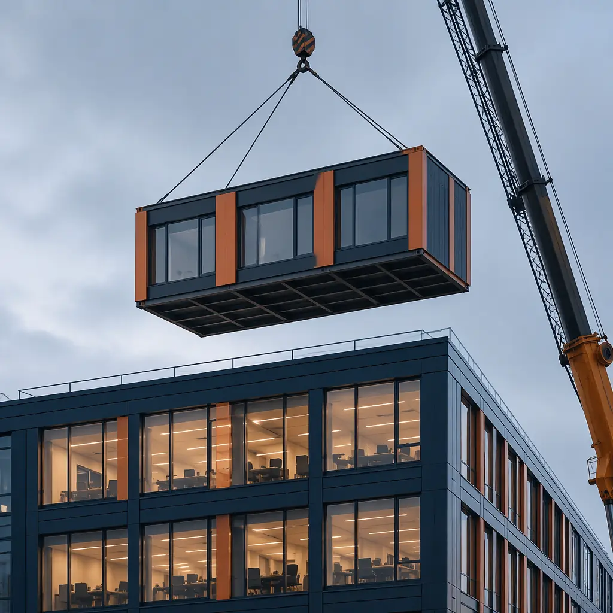
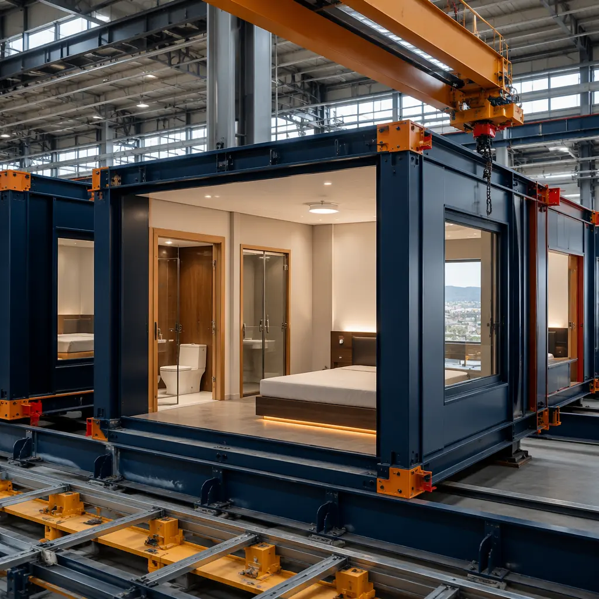
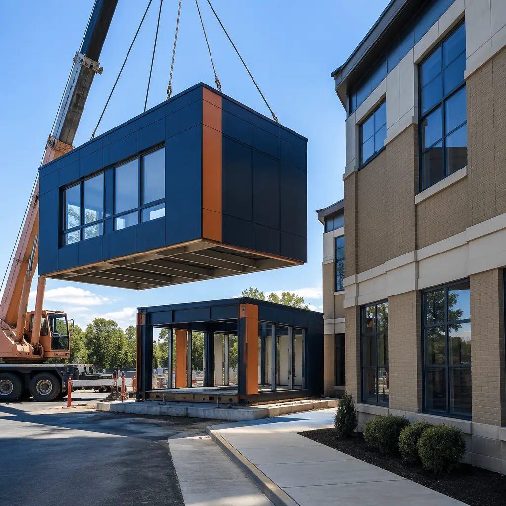
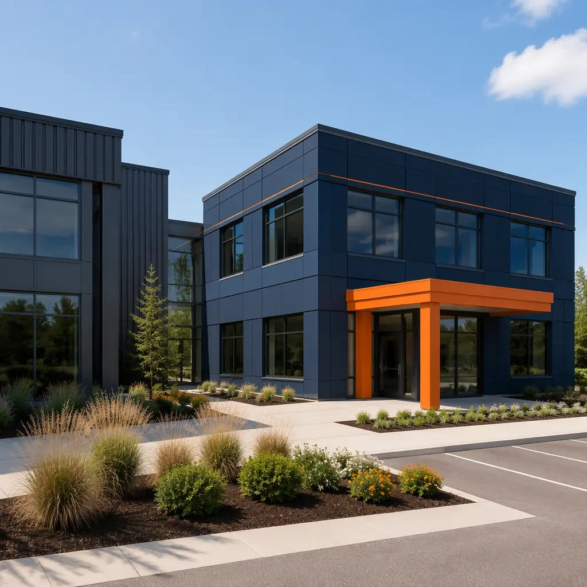

Every building owner eventually faces the same reality: the building that was the right size five years ago is no longer big enough. A hotel needs 40 more rooms to capture conference business. A school's enrollment has outgrown its 1990s floor plan. A hospital needs a new wing but cannot afford to take existing beds offline during construction. The conventional answer — a stick-built addition with 12–18 months of construction disruption, noise, dust, and operational compromise — is so painful that many owners delay expansion until the pain of inadequate space exceeds the pain of construction. Modular construction changes this calculus. By building the addition off-site while the existing building remains fully operational, modular additions cut construction time on the occupied site by 50–70% and reduce the disruption that makes traditional additions a last resort.

Why Modular Additions Work Where Traditional Additions Fail
Traditional building additions suffer from three problems that modular construction solves by changing where the work happens.
Problem 1: Occupied-site disruption. For a deeper look, our wildfire-resistant modular construction guide covers the details. A traditional addition requires 12–18 months of construction activity adjacent to occupied spaces: foundation excavation, steel erection, enclosure, MEP rough-in, and interior finishes — all generating noise, dust, and vibration that travel through the existing building structure. For a hospital, this means patient complaints and infection control risks. For a hotel, this means negative guest reviews and revenue loss from rooms that cannot be sold because they adjoin the construction zone. For a school, this means classes conducted next to jackhammering.
Modular construction solves this by moving 85–95% of the construction labor off-site. Foundation work and utility connections happen on the occupied site, typically requiring 4–8 weeks of activity. The modules — complete rooms with finishes, MEP, and fixtures — are manufactured in the factory during the same period or before. When the modules arrive, they are craned into position over 2–5 days. The site connection work — module-to-module structural connections, MEP tie-ins, corridor completion, and commissioning — requires an additional 4–8 weeks. Total occupied-site construction time: 8–16 weeks, compared to 48–72 weeks for a traditional addition of equivalent scope.
Problem 2: Weather delays extending disruption. For a deeper look, our sustainable by design guide covers the details. A traditional addition's schedule is weather-dependent from foundation to roof. Rain delays excavation. Wind delays steel erection. Cold delays concrete curing and masonry work. Every weather delay extends the period of operational disruption for the existing building. Modular additions, by contrast, have only 8–16 weeks of weather-exposed site work. The factory production schedule runs independently of weather, meaning that even if site work is delayed, the modules are being completed simultaneously rather than sequentially.
Problem 3: Quality mismatch between old and new. Traditional additions often exhibit visible quality differences between the original building and the addition — different wall flatness, different window alignment, different finish consistency. These differences arise because the addition was built by a different crew under different conditions, often years after the original building, using construction techniques that may have evolved in the interim. Modular additions, built in a factory with calibrated jigs and documented QA procedures, achieve dimensional consistency that matches or exceeds the original building's quality. For owners who have invested in modular building design flexibility, the addition can be designed to visually integrate with the original architecture rather than announce itself as an afterthought.
Three Structural Integration Strategies
Connecting a modular addition to an existing building requires careful structural engineering, but the approaches are well-established and supported by building codes. The appropriate strategy depends on the existing building's structural system, the addition's size, and the seismic design category of the location.
| Strategy | How It Works | Best For | Site Disruption |
|---|---|---|---|
| Structurally Independent | Addition has its own foundation and lateral force-resisting system. Connected to existing building only through a non-structural link corridor with seismic separation joints. | Additions larger than 50% of existing floor area; existing building with unknown or undocumented structural capacity; high-seismic zones requiring independent movement. | Lowest — no structural modification to existing building |
| Structurally Tied | Addition shares lateral load resistance with existing building through rigid connections at floor and roof levels. Existing building may require localized reinforcement at connection points. | Additions of 25–50% of existing floor area; existing building with documented structural drawings and confirmed capacity; low-to-moderate seismic zones. | Moderate — connection point reinforcement requires interior work |
| Vertical (Overbuild) | Modular floor levels added on top of existing building. Existing roof removed, new structural columns extended through existing building to foundation, or existing columns reinforced to carry added loads. | Urban sites with zero available footprint expansion; existing steel or concrete frame buildings; buildings originally designed for future vertical expansion. | Highest — roof removal + column reinforcement affects occupied floors |
The structurally independent strategy is the most common for modular additions because it maximizes the modular advantage: minimal disruption to the occupied building. The addition is treated as a separate building for structural purposes, connected only by a link corridor that accommodates differential movement between the two structures. This approach also simplifies the permitting process, as the addition can be reviewed as a standalone structure with its own structural calculations, fire protection systems, and egress paths.
Six Addition Types Where Modular Excels

Not every building expansion is a good candidate for modular. The projects where modular additions deliver the strongest ROI share three characteristics: repetitive unit layouts, schedule-critical operations, and existing buildings that cannot be taken offline. These six addition types exemplify those characteristics:
- Hotel room wing additions: Adding 20–60 guest rooms to an existing hotel. Rooms are identical modules built in the factory while the hotel continues operating. Site work consists of foundation + 3–5 days of module setting + 4–6 weeks of corridor and MEP connections. Total occupied-site disruption: 8–12 weeks. Revenue loss during construction: near zero, because existing rooms remain bookable. For hotel operators evaluating how modular hotels cut construction time, the addition scenario is often the most compelling financial case because the existing revenue stream continues uninterrupted.
- Hospital ward and clinic expansions: Adding patient rooms, exam rooms, or procedure suites to an active hospital. Infection control requirements make traditional construction adjacent to occupied clinical spaces extraordinarily expensive — negative air pressure containment, dust barriers, daily cleaning protocols, and frequent shutdowns of adjacent HVAC zones. Modular additions, with 8–12 weeks of site work instead of 60–80 weeks, reduce infection control costs by 60–80% and eliminate the risk of construction-related hospital-acquired infections.
- School classroom additions: Adding 4–12 classrooms to an operating school. The construction must be completed during the 10–12 week summer break, which is impossible for a traditional addition. Modular additions are manufactured during the spring semester, delivered and set during the first 2 weeks of summer, and connected and commissioned during the remaining 8–10 weeks — fitting within a single summer break. For districts that have already built modular K-12 school buildings, modular additions are a natural extension of the same proven approach.
- Office floor additions (vertical overbuild): Adding 1–3 floors to an existing office building in an urban location where horizontal expansion is impossible. The existing building's columns must be evaluated and potentially reinforced to carry the added load, but modular construction makes the overbuild itself rapid: modules are craned onto the existing roof structure in 3–7 days, minimizing the period during which the existing roof is exposed to weather. For office buildings, modular office construction techniques translate directly to vertical additions.
- Senior living and assisted living expansions: Adding residential units and common areas to an existing senior living community. The resident population cannot be relocated during construction, making traditional additions extremely disruptive. Modular additions are built off-site while residents continue their daily routines, then connected over 8–14 weeks of site work. The reduced disruption is not just a construction convenience — it is a resident safety and satisfaction requirement that directly affects the facility's reputation and occupancy rate.
- Retail and restaurant floor area additions: Expanding retail floor area or adding dining capacity to an existing restaurant. Revenue loss during closure is the dominant cost driver — a restaurant that closes for 6 months for a traditional addition loses more in revenue than the addition costs to build. Modular additions, with 4–6 weeks of site work, can be scheduled during the slowest business period and completed between the end of one season and the start of the next. For retail operators who have explored modular retail construction, modular additions offer the same speed advantages applied to existing locations.
Cost Comparison — Modular Addition vs Traditional Addition
The cost comparison between modular and traditional additions must account for not just construction cost, but also operational disruption cost — the revenue lost and operational compromises incurred during construction. For many building types, operational disruption costs exceed construction costs.
| Cost Category | Traditional Addition | Modular Addition | Difference |
|---|---|---|---|
| Construction cost (40-room hotel wing) | $3.2–3.8M ($200–240/sq ft, 16,000 sq ft) | $3.0–3.5M ($185–220/sq ft) | 5–10% lower |
| Occupied-site duration | 48–72 weeks | 8–16 weeks | 70–80% shorter |
| Revenue loss (rooms out of service) | $80–150K (10–15 rooms offline for 12 months at $70 ADR) | $0–15K (0–3 rooms offline for 2–3 months) | 90–100% lower |
| Infection control / dust containment | $40–80K (hospital addition) | $10–20K (reduced duration) | 70–75% lower |
| Total project cost including disruption | $3.3–4.0M | $3.0–3.5M | 10–15% lower total |

The 7-Step Planning Framework for Modular Additions
Developers considering a modular addition should follow this sequence to avoid the most common pitfalls:
- Existing building structural assessment: Commission a structural engineer to document the existing building's structural system, foundation capacity, and lateral force-resisting system. This assessment determines which integration strategy (independent, tied, or overbuild) is feasible. Budget: $15–30K. Duration: 3–4 weeks.
- Utility capacity evaluation: Determine whether the existing building's electrical service, water supply, sanitary sewer, and HVAC central plant have capacity for the addition. Utility upgrades can be the single largest unexpected cost in addition projects. Budget: $5–10K.
- Zoning and code analysis: Verify that the addition complies with current zoning (height limits, setbacks, lot coverage, parking requirements) and building code (fire separation between existing and new, egress continuity, accessibility requirements). Note that the addition triggers review under the current code, not the code under which the original building was constructed. See modular construction permitting and zoning for a detailed guide to the regulatory landscape.
- Module configuration design: Working with a modular manufacturer, determine the optimal module dimensions and configuration for your addition. Module width is typically constrained by transportation limits (14–16 ft wide, up to 75 ft long in most jurisdictions). The module grid must align with the existing building's floor-to-floor heights and corridor locations. Budget: included in manufacturer's design-build proposal.
- Foundation design: Design the addition's foundation system. For structurally independent additions, this is straightforward — spread footings or a mat foundation sized for the module loads. For tied additions, the foundation must be coordinated with the existing building's foundation to manage differential settlement. For overbuilds, the existing foundation and columns require detailed capacity verification.
- MEP interface planning: Design the connection points where the addition's mechanical, electrical, and plumbing systems tie into the existing building's systems. Modular additions include pre-installed MEP risers and distribution within the modules; the interface work consists of extending the existing building's main lines to the module connection points. This work must be carefully sequenced to minimize shutdowns of existing building systems. See modular MEP systems integration for technical interface details.
- Construction phasing and communication plan: Develop a detailed phasing plan that specifies which areas of the existing building will be affected during which weeks, and a communication plan for occupants, tenants, patients, students, or guests. The goal is to ensure that everyone affected by the construction knows what to expect and when — and that the construction team knows which areas must remain fully operational at all times.
Building additions are the highest-stakes construction projects because the existing building is both the reason for the project and the constraint on how it can be executed. Modular construction reduces that constraint by moving the construction off-site. The addition is built while the existing building earns revenue. The two only meet when the heavy lifting is done.
